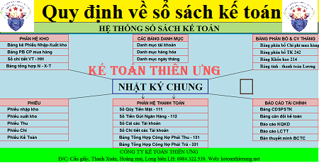

Các quy định về sổ sách kế toán như: Quy định về mở sổ, ghi sổ kế toán, khóa sổ kế toán, chữ ký trên sổ kế toán, sửa chữa sổ kế toán, trách nhiệm của người giữ và ghi sổ kế toán… theo Thông tư 133 và Luật kế toán 88/2015/QH13
Lựa chọn sổ sách kế toán:
- Tất cả các biểu mẫu sổ kế toán (kể cả các loại Sổ Cái, sổ Nhật ký) đều thuộc loại hướng dẫn (không bắt buộc). Doanh nghiệp phải tuân thủ quy định của Luật Kế toán và các văn bản hướng dẫn Luật Kế toán. Doanh nghiệp được tự thiết kế biểu mẫu sổ, thẻ kế toán phù hợp với đặc điểm hoạt động và yêu cầu quản lý nhưng phải đảm bảo trình bày thông tin đầy đủ, rõ ràng, dễ kiểm tra, kiểm soát.
(Theo điều 10 Thông tư 133/2016/TT-BTC)
- Doanh nghiệp được tự xây dựng biểu mẫu sổ kế toán cho riêng mình nhưng phải đảm bảo cung cấp thông tin về giao dịch kinh tế một cách minh bạch, đầy đủ, dễ kiểm tra, dễ kiểm soát và dễ đối chiếu. Trường hợp không tự xây dựng biểu mẫu sổ kế toán, doanh nghiệp có thể áp dụng biểu mẫu sổ kế toán theo hướng dẫn tại Phụ lục 4 ban hành kèm theo Thông tư này nếu phù hợp với đặc điểm quản lý và hoạt động kinh doanh của mình.
- Tùy theo đặc điểm hoạt động và yêu cầu quản lý, doanh nghiệp được tự xây dựng hình thức ghi sổ kế toán cho riêng mình trên cơ sở đảm bảo thông tin về các giao dịch phải được phản ánh đầy đủ, kịp thời, dễ kiểm tra, kiểm soát và đối chiếu.
(Theo khoản 2, 3 điều 88 Thông tư 133/2016/TT-BTC)
Mục đích của sổ sách kế toán:
- Sổ kế toán dùng để ghi chép, hệ thống và lưu giữ toàn bộ các nghiệp vụ kinh tế, tài chính đã phát sinh theo nội dung kinh tế và theo trình tự thời gian có liên quan đến doanh nghiệp. Mỗi doanh nghiệp nhỏ và vừa chỉ có một hệ thống sổ kế toán cho một kỳ kế toán. Doanh nghiệp nhỏ và vừa phải thực hiện các quy định về sổ kế toán trong Luật Kế toán, các văn bản hướng dẫn thi hành Luật Kế toán và các văn bản hướng dẫn, sửa đổi, bổ sung hoặc thay thế.
(Theo khoản 1 điều 88 Thông tư 133/2016/TT-BTC)
- Sổ kế toán dùng để ghi chép, hệ thống và lưu giữ toàn bộ các nghiệp vụ kinh tế, tài chính đã phát sinh có liên quan đến đơn vị kế toán.
(Theo điều 24 Luật kế toán 88/2015/QH13)
Quy định mở sổ sách kế toán
- Sổ kế toán phải mở vào đầu kỳ kế toán năm. Đối với doanh nghiệp mới thành lập, sổ kế toán phải mở từ ngày thành lập. Người đại diện theo pháp luật và kế toán trưởng của doanh nghiệp có trách nhiệm ký duyệt các sổ kế toán. Sổ kế toán có thể đóng thành quyển hoặc để tờ rời. Các tờ sổ khi dùng xong phải đóng thành quyển để lưu trữ. Trước khi dùng sổ kế toán phải hoàn thiện các thủ tục sau:
+ Đối với sổ kế toán dạng quyển: Trang đầu sổ phải ghi rõ tên doanh nghiệp, tên sổ, ngày mở sổ, niên độ kế toán và kỳ ghi sổ, họ tên, chữ ký của người giữ và ghi sổ, của kế toán trưởng và người đại diện theo pháp luật, ngày kết thúc ghi sổ hoặc ngày chuyển giao cho người khác. Sổ kế toán phải đánh số trang từ trang đầu đến trang cuối, giữa hai trang sổ phải đóng dấu giáp lai của đơn vị kế toán.
+ Đối với sổ tờ rời: Đầu mỗi sổ tờ rời phải ghi rõ tên doanh nghiệp, số thứ tự của từng tờ sổ, tên sổ, tháng sử dụng, họ tên người giữ và ghi sổ. Các tờ rời trước khi dùng phải được giám đốc doanh nghiệp hoặc người được ủy quyền ký xác nhận, đóng dấu và ghi vào sổ đăng ký sử dụng sổ tờ rời. Các sổ tờ rời phải được sắp xếp theo thứ tự các tài khoản kế toán và phải đảm bảo sự an toàn, dễ tìm.
(Theo khoản 1 điều 90 Thông tư 133/2016/TT-BTC)
Quy định ghi sổ sách kế toán:
- Việc ghi sổ kế toán phải căn cứ vào chứng từ kế toán đã được kiểm tra bảo đảm các quy định về chứng từ kế toán. Mọi số liệu ghi trên sổ kế toán bắt buộc phải có chứng từ kế toán hợp pháp, hợp lý chứng minh.
(Theo khoản 2 điều 90 Thông tư 133/2016/TT-BTC)
- Sổ kế toán phải ghi rõ tên đơn vị kế toán; tên sổ; ngày, tháng, năm lập sổ; ngày, tháng, năm khóa sổ; chữ ký của người lập sổ, kế toán trưởng và người đại diện theo pháp luật của đơn vị kế toán; số trang; đóng dấu giáp lai.
- Sổ kế toán phải có các nội dung chủ yếu sau đây:
a) Ngày, tháng, năm ghi sổ;
b) Số hiệu và ngày, tháng, năm của chứng từ kế toán dùng làm căn cứ ghi sổ;
c) Tóm tắt nội dung của nghiệp vụ kinh tế, tài chính phát sinh;
d) Số tiền của nghiệp vụ kinh tế, tài chính phát sinh ghi vào các tài khoản kế toán;
đ) Số dư đầu kỳ, số phát sinh trong kỳ, số dư cuối kỳ.
- Sổ kế toán gồm sổ kế toán tổng hợp và sổ kế toán chi tiết.
(Theo điều 24 Luật kế toán 88/2015/QH13)
Xem thêm: Các hinh thức ghi sổ kế toán
Quy định khóa sổ sách kế toán:
- Cuối kỳ kế toán phải khóa sổ kế toán trước khi lập Báo cáo tài chính. Ngoài ra phải khóa sổ kế toán trong các trường hợp kiểm kê hoặc các trường hợp khác theo quy định của pháp luật.
(Theo khoản 3 điều 90 Thông tư 133/2016/TT-BTC)
Xem thêm: Thời hạn lưu trữ sổ sách kế toán
Quy định sửa chữa sổ sách kế toán
- Khi phát hiện sổ kế toán của kỳ báo cáo có sai sót thì phải sửa chữa bằng phương pháp phù hợp với quy định của Luật Kế toán.
- Trường hợp phát hiện sai sót trong các kỳ trước, doanh nghiệp phải điều chỉnh hồi tố.
(Theo khoản 5, 6 điều 90 Thông tư 133/2016/TT-BTC)
- Khi phát hiện sổ kế toán có sai sót thì không được tẩy xóa làm mất dấu vết thông tin, số liệu ghi sai mà phải sửa chữa theo một trong ba phương pháp sau đây:
a) Ghi cải chính bằng cách gạch một đường thẳng vào chỗ sai và ghi số hoặc chữ đúng ở phía trên và phải có chữ ký của kế toán trưởng bên cạnh;
b) Ghi số âm bằng cách ghi lại số sai bằng mực đỏ hoặc ghi lại số sai trong dấu ngoặc đơn, sau đó ghi lại số đúng và phải có chữ ký của kế toán trưởng bên cạnh;
c) Ghi điều chỉnh bằng cách lập “chứng từ điều chỉnh” và ghi thêm số chênh lệch cho đúng.
- Trường hợp phát hiện sổ kế toán có sai sót trước khi báo cáo tài chính năm được nộp cho cơ quan nhà nước có thẩm quyền thì phải sửa chữa trên sổ kế toán của năm đó.
- Trường hợp phát hiện sổ kế toán có sai sót sau khi báo cáo tài chính năm đã nộp cho cơ quan nhà nước có thẩm quyền thì phải sửa chữa trên sổ kế toán của năm đã phát hiện sai sót và thuyết minh về việc sửa chữa này.
- Sửa chữa sổ kế toán trong trường hợp ghi sổ bằng phương tiện điện tử được thực hiện theo phương pháp quy định tại điểm c khoản 1 Điều này.
(Theo điều 27 Luật kế toán 88/2015/QH13)
Quy định trách nhiệm của người giữ và ghi sổ kế toán
- Sổ kế toán phải được quản lý chặt chẽ, phân công rõ ràng trách nhiệm cá nhân giữ và ghi sổ. Sổ kế toán giao cho nhân viên nào thì nhân viên đó phải chịu trách nhiệm về những điều ghi trong sổ và việc giữ sổ trong suốt thời gian dùng sổ. Khi có sự thay đổi nhân viên giữ và ghi sổ, kế toán trưởng phải tổ chức việc bàn giao trách nhiệm quản lý và ghi sổ kế toán giữa nhân viên cũ và nhân viên mới. Biên bản bàn giao phải được kế toán trưởng ký xác nhận.
- Đối với người ghi sổ thuộc các đơn vị dịch vụ kế toán phải ký và ghi rõ Số chứng chỉ hành nghề, tên và địa chỉ đơn vị cung cấp dịch vụ kế toán. Người ghi sổ kế toán là cá nhân hành nghề ghi rõ số chứng chỉ hành nghề.
Kế toán Diệu Tâm xin chúc các bạn thành công!
